Today officially marks one month since Lane and I got married. To celebrate my one month wedding anniversary with Lane, I've decided to write a blog post about how I was able to have my dream wedding without breaking the bank or taking out a second mortgage (sad, but true -- I know of people who have taken out loans for their wedding!).
First, here is the number one rule: never, ever, EVER throw a wedding with money you don't have. If you need to take out a loan of any sort, then it's time to think about other options. Remember, as spectacular and amazing as wedding days can be, it ultimately is just ONE day in your life. It's not worth going into debt for. Plus, there are so many ways you can be cost-effective. We chose to have our wedding on a Friday, which cost less than having it on a Saturday or Sunday. We also booked our venue when it was under renovations so we got an additional 15% off. We kept our wedding intimate with just over 70 guests, making costs for food and beverages much more manageable. We saved even more money because we didn't exchange wedding rings -- we don't value symbols and both hate wearing jewelry. Similarly, I didn't buy a garter for a garter toss, had cupcakes instead of a cake (we had Sprinkles cupcakes which our guests LOVED and it cost only half as much as a cake would've), and wore shoes we already own (I know shoes seem like a small detail but brides go crazy spending big $$$ on Jimmy Choos). Another important thing -- get your guests as involved as possible! I wanted everyone to feel engaged at my wedding (have you ever been to a wedding where you just didn't care to be there?) so many people had roles outside of just being a guest. Utilize their talents and resources. I collected glass jars from many family, friends, and neighbors. My sister and godfather were my photographers. And so on.
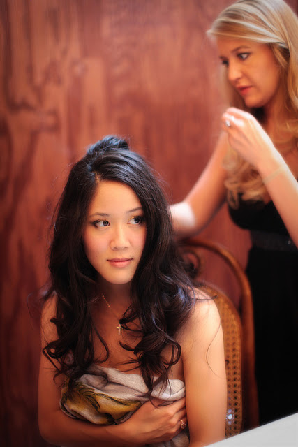
We all did our own hair and makeup. No "professionals" needed. Added bonus: we all looked like ourselves and not super done up.
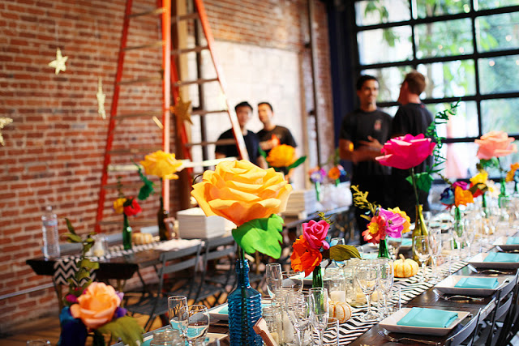
Rather than hiring a wedding coordinator, I enlisted the help of our entire wedding party and some of my brothers friends to help set up. It was hard work, and at times very chaotic, but bonded us all together and was so much fun.
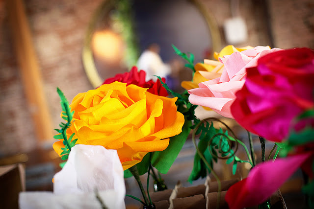
Our infamous paper roses made of double sided crepe paper. Each rose acted as a centerpiece and cost about $10 to make. These are also flowers people took home after the wedding to decorate their houses with. No waste!
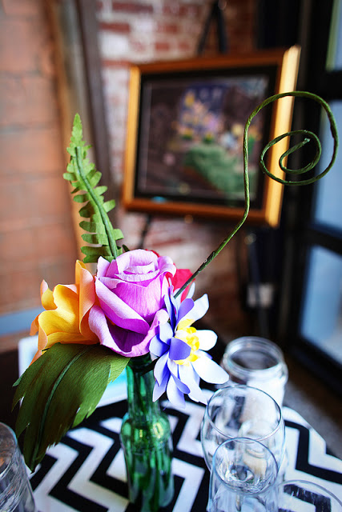
Here we have beer bottle vases for the flowers.
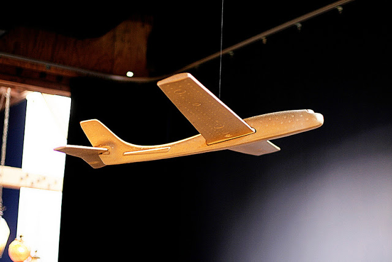
My hubby loves airplanes so I bought a foam glider for $13 and sprayed it with gold spray paint (make sure you use a spray paint that does not dissolve foam). An inexpensive but striking piece.
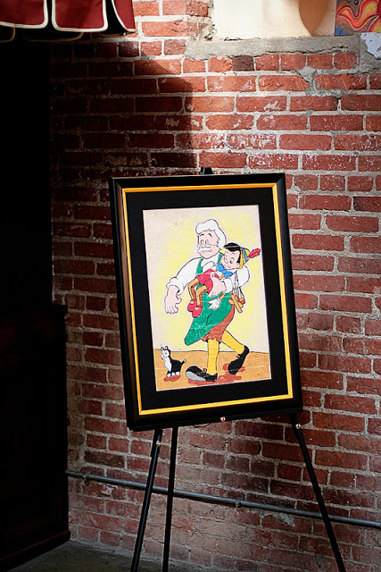
My family likes to draw and paint. We brought art that we have hanging around our house to display at the wedding as decoration. They added color and a touch of whimsy!
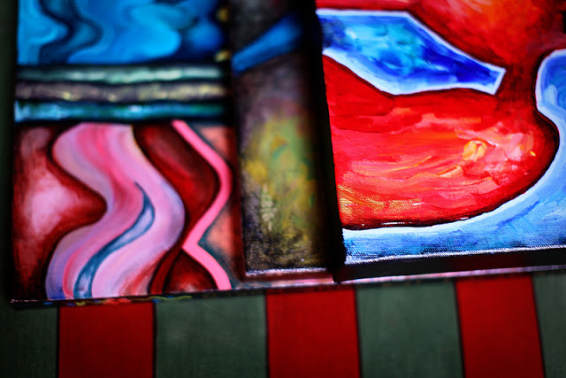
A stack of paintings getting ready to be hung. It made our wedding more personal to bring in elements from our home and our family's homes.
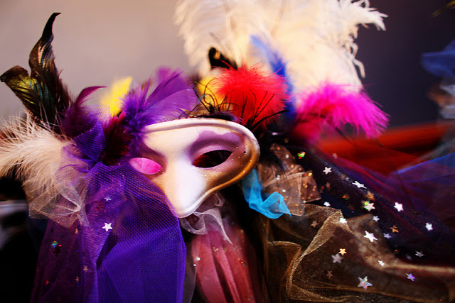
Did I mention we had a masquerade? My mother-in-law is super crafty and she made these masks as party favors. Each one was unique. The sticks used for the masks were bamboo rods sourced from her neighbor's backyard.
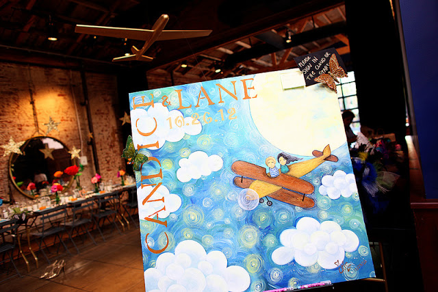
My twin painted our sign-in painting. Instead of having a traditional photo album for people to sign, we wanted a statement piece. This project cost a bit more ($60 for paint and canvas) but is something we will always treasure.
Our sign-in painting in action.
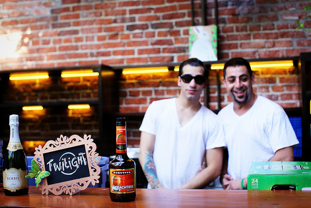
We made signature drink menus. Of course "Twilight" had to be one of them. I'm 25 and still a Twi-hard, k?! We bought cheap wooden frames, chalkboard paper, and a butterfly accent. Inexpensive but was a nice detail to have.
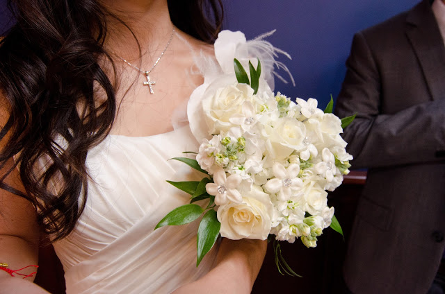
My simple but timeless bouquet.
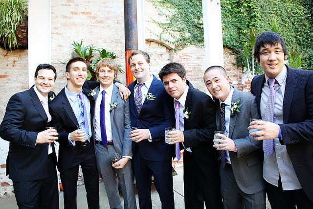
To save money on the groomsmens' outfit, we had them wear whatever suit they already own. The only thing we specified were the purple ties (any shade and pattern -- it just had to be purple). This saved everyone the nightmare of renting $150 tuxes.
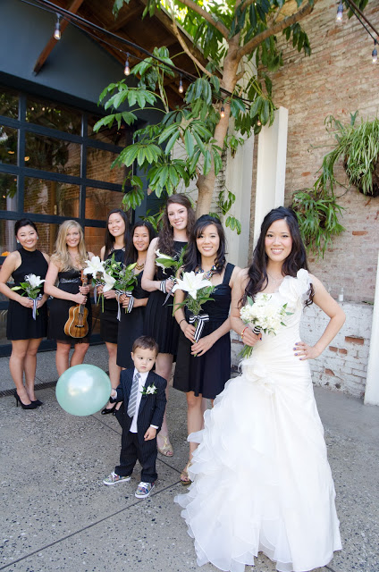
Same with the bridesmaids' dresses. I asked them to wear whatever LBD (little black dress) that they either already own or something they will wear again and again. No need for them to all buy the same, expensive satin-y dress they'll only wear once. Also, I chose while oriental lilies for the bridesmaids' bouquets. We only needed one or two lilies for each bouquet and they are dramatic without being over-the-top pricey.
So remember, just use your creativity and tap into your resources. Let your guests be a part of the experience. Just because something is a tradition doesn't mean you have to have it at your wedding. No need to spend money on silly traditions you don't care about. Also, just because something costs more doesn't mean it's better. And lastly, the most important element to our wedding was our amazing family and friends. With the right people, any event will be spectacular. And friends and family are priceless. :-)

Comments
Share:
Theodore says: Hello!
5:43pm 3/30/2013Theodore replied: Hey there!
5:47pm 3/30/2013